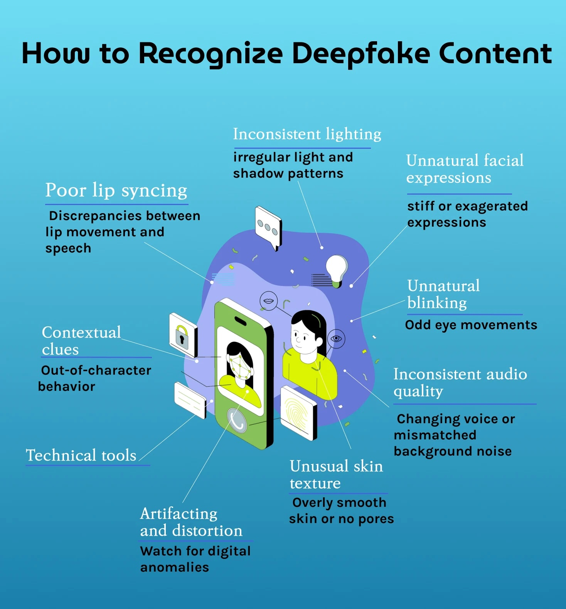

Desinformación y Deepfakes en la Era Digital#
Hoy estamos en un punto de inflexión. En los próximos meses y años, los deepfakes amenazan con pasar de ser una rareza de Internet a una fuerza política y social ampliamente destructiva. La sociedad necesita actuar ahora para prepararse.
Rob Toews(2022) “Deepfakes Are Going To Wreak Havoc On Society. We Are Not Prepared”. Forbes.
Introducción#
from IPython.display import YouTubeVideo
YouTubeVideo('ACVglWBYhQA', width=800, height=450)
Tipos de información falsa:#
Desinformación (Disinformation)
Información falsa creada intencionalmente para engañar.
Ejemplo: Noticias falsas sobre resultados electorales.
Información errónea (Misinformation)
Información falsa compartida sin intención de engañar.
Ejemplo: Compartir un rumor que creíste verdadero.
Malinformación (Malinformation)
Información verdadera pero compartida para causar daño.
Ejemplo: Filtración de datos personales.
DeepFakes#
¿Qué es una Deepfake?
Tecnología detrás de los Deepfakes:#
Redes Neuronales Generativas Adversariales (GANs):
Una IA crea contenido falso
Otra IA intenta detectar si es falso
Compiten hasta que el falso es indistinguible del real
Ejemplo visual del proceso:#
Pseudocódigo simplificado de cómo funciona un deepfake
def crear_deepfake(video_original, rostro_objetivo):
1. Extraer rostro del video original
rostros = extraer_rostros(video_original)
2. Mapear rostro objetivo sobre cada frame
for frame in rostros:
frame_falso = reemplazar_rostro(frame, rostro_objetivo)
ajustar_iluminacion(frame_falso)
ajustar_expresiones(frame_falso)
3. Sincronizar audio con movimientos labiales
sincronizar_labios(frames_falsos, audio_original)
return video_deepfake
Casos Históricos Famosos#
1. Deepfake de Obama (2018)#
Objetivo: Educar al público sobre deepfakes.
Resultado: Millones de visualizaciones y conciencia sobre el problema.
from IPython.display import YouTubeVideo
YouTubeVideo('cQ54GDm1eL0', width=800, height=450)
2. Deepfake de Mark Zuckerberg (2019)#
Contexto: Instagram (propiedad de Facebook) permitió que un deepfake de su propio CEO permaneciera en la plataforma.
Lo que decía el falso Zuckerberg:
“Imagina esto por un segundo: Un hombre, con control total de miles de millones de datos robados, todos sus secretos, sus vidas, sus futuros… Quien controla los datos, controla el futuro.”
La ironía:
Facebook/Instagram NO eliminó el video
Argumentaron que su política no requería borrar deepfakes
Esto generó enorme controversia
Temas que desató:
🔐 Privacidad de datos - ¿Cuánto sabe Facebook de nosotros?
⚖️ Responsabilidad de plataformas - ¿Deben eliminar deepfakes?
📜 Regulación - ¿Necesitamos leyes específicas?
Lección clave: Las grandes tecnológicas también son vulnerables a su propia tecnología.
3. Guerra en Ucrania (2022)#
Uno de los primeros conflictos con abundante desinformación por IA:
Deepfake de Zelensky “rindiéndose” (falso)
Videos viejos presentados como actuales
Imágenes generadas por IA de supuestas atrocidades
Tipos de Deepfakes#
1. Video#
Reemplazo de rostro completo.
Manipulación de expresiones.
Ejemplo: Poner tu cara en una película.
2. Audio (Voice Cloning)#
Clonar voz de cualquier persona.
Solo necesitan ~3-10 segundos de audio original.
Aplicaciones: estafas telefónicas, suplantación.
3. Texto#
ChatGPT puede imitar estilos de escritura.
Generar artículos “de periódicos” falsos.
Crear perfiles falsos en redes sociales.
4. Cheapfakes (manipulación simple)#
No usan IA avanzada.
Edición básica pero efectiva.
Ejemplo: Videos en cámara lenta para hacer que alguien parezca ebrio.

El impacto más negativo que pueden causar los Deepfakes es generar en la sociedad una ausencia absoluta de confianza, lo que termine ocasionando un gran desinterés a la hora de diferenciar entre los archivos verdaderos y los Deepfakes. Cuando esta confianza es erosionada, se facilita mucho el hecho de generar dudas e inculcar ideas erróneas, dificultando el pensamiento crítico.
Lisa Institute : “Deepfakes: Qué es, tipos, riesgos y amenazas”
Cómo Detectar Deepfakes#
Señales visuales en videos: Checklist de detección#
✓ Parpadeo extraño o inexistente.
✓ Bordes del rostro borrosos.
✓ Iluminación inconsistente.
✓ Movimientos labiales no sincronizados.
✓ Piel demasiado suave o artificial.
✓ Fondo pixelado o distorsionado.
✓ Joyas o accesorios que cambian.
✓ Sombras inconsistentes.
Herramientas de detección:#
Herramienta |
Función |
Disponibilidad |
|---|---|---|
InVID |
Verificación de videos |
Gratis (extensión Chrome) |
FotoForensics |
Análisis de manipulación de imágenes |
Gratis (web) |
TinEye |
Búsqueda inversa de imágenes |
Gratis |
Google Reverse Image |
Encontrar origen de imágenes |
Gratis |
Preguntas críticas para verificar información:#
“¿Quién creó este contenido?”,
“¿Cuál es la fuente original?”,
“¿Cuándo fue publicado?”,
“¿Por qué fue creado? ¿Qué agenda tiene?”,
“¿Dónde más ha sido reportado?”,
“¿Medios confiables lo confirman?”
Los contenidos lascivos y ficticios creados con esta tecnología (IA) representan el 98% de todos los videos deepfake en línea. Durante el último año, el contenido sexual ultrafalso registró un aumento del 400%. Alcanzó un tráfico mensual superior a 34 millones de usuarios en 2023. El 99% de los destinatarios fueron mujeres. “Esto sigue una tendencia preexistente en la violencia de género facilitada por la tecnología, donde el 58% de las mujeres jóvenes y niñas en todo el mundo han experimentado acoso en línea en plataformas de redes sociales, con un impacto desproporcionado experimentado según el género, la raza y el origen étnico, orientación sexual, religión y otros factores.
Disrupting the Deepfake Supply Chain
Impacto de la Desinformación#
En la Democracia:#
❌ Interferencia en elecciones.
❌ Desconfianza en instituciones.
❌ Polarización extrema.
❌ Manipulación de opinión pública: Brexit.
En la Sociedad:#
❌ Teorías conspirativas: la muerte de JFK.
❌ Rechazo a vacunas (ej: COVID-19).
❌ Violencia basada en rumores: Las fotos falsas en la crisis de los rohingya
❌ Daño a reputaciones.
En Individuos:#
❌ Chantaje con deepfakes sexuales: pornografía de venganza.
❌ Estafas de suplantación de voz.
❌ Bullying con contenido falso.
❌ Pérdida de confianza en medios.
Casos de Uso Legítimos de esta Tecnología#
No todo es negativo. La misma tecnología tiene usos positivos:
1. Entretenimiento#
Efectos especiales en películas.
Rejuvenecimiento de actores (ej: “The Irishman”).
Resurrección digital de actores fallecidos.
2. Educación#
Traducción de videos a otros idiomas con labios sincronizados.
Recreación de figuras históricas.
Simulaciones interactivas.
3. Accesibilidad#
Voces sintéticas para personas con problemas de habla.
Avatares para personas con discapacidades.
Asistentes virtuales personalizados.
4. Medicina#
Simulaciones de procedimientos.
Entrenamiento médico.
Terapia psicológica (avatares de terapeutas).
La investigadora Aviv Ovadya advierte de lo que ella llama apatía por la realidad: "Es demasiado esfuerzo averiguar qué es real y qué no lo es, por lo que estás más dispuesto a ir con lo que sean tus afiliaciones anteriores". En un mundo en el que ver ya no es creer, la capacidad de una gran comunidad para ponerse de acuerdo sobre lo que es cierto, y mucho menos para entablar un diálogo constructivo al respecto, de repente parece precaria.
Rob Toews(2022) “Deepfakes Are Going To Wreak Havoc On Society. We Are Not Prepared”. Forbes.
Ejemplo Histórico: Propaganda en la Historia#
La desinformación no es nueva, solo las herramientas han cambiado:
El gran engaño de la Luna (1835)
La Fábrica de Cuerpos Alemana (1917)
Sputnik de Joan Fontcuberta (1997)
En el apogeo de la carrera espacial en 1968, un misterioso suceso envolvió al cosmonauta soviético Ivan Istochnikov, que desapareció en circunstancias intrigantes durante una misión. Para contar su historia, se aportan fotografías en las que aparece y textos que narran su odisea y la de su familia, deportada a Siberia en un supuesto intento por parte de la Unión Soviética de encubrir la pérdida del astronauta. Sin embargo, esta historia, en su totalidad, es pura ficción.
Forma parte de Sputnik, un proyecto desarrollado en 1997 por Joan Fontcuberta. A través de esta obra, este artista multidisciplinar plantea una poderosa reflexión sobre cómo, mediante la manipulación de imágenes y documentos, es posible reconstruir la historia para servir a intereses particulares.
Profundizar:
Si deseas conocer más ejemplos de deepfakes a lo largo de la Historia te recomiendo leer el libro: “Verdad. Una breve historia de la charlatanería” de Tom Phillips.
“Para que una sociedad moderna funcione, las personas necesitan tener acceso a información creíble y auténtica. Engañar al público mediante el uso de la IA debería regularse y aplicarse mediante leyes específicas y formalizadas. Cada vez es más difícil identificar qué es real en internet. Es necesario trazar líneas para proteger nuestra capacidad de reconocer a seres humanos reales”
Disrupting the Deepfake Supply Chain (2024)
Cómo Protegerse de la Desinformación#
1. Desarrollar Alfabetización Mediática#
Identificar fuentes confiables.
Verificar información antes de compartir.
Entender sesgos en los medios de comunicación tradicionales como en las RRSS.
Reconocer técnicas de manipulación.
Buscar múltiples perspectivas.
2. Usar el Método SIFT#
Stop - Detente antes de compartir.
Investigate the source - Investiga la fuente.
Find better coverage - Busca mejor cobertura.
Trace to original - Rastrea hasta el original.
3. Verificar con Fact-Checkers#
Sitios de verificación en español:
Maldita.es (España)
Newtral (España)
Fast Check CL (Chile)
AFP Factual (Global)
Chequeado (Argentina)
4. Configurar la Privacidad#
Protege tu imagen y voz:
Configura privacidad en redes sociales.
Limita quién puede ver tus fotos/videos.
No compartas material sensible públicamente.
Usa autenticación de dos factores.
Marco Legal Actual#
Internacional:#
UE: AI Act incluye regulación de deepfakes.
EE.UU.: Algunas leyes estatales (California, Texas).
China: Requiere marca de agua en contenido sintético.
Chile:#
❌ No existe legislación específica sobre deepfakes.
⚠️ Vacío legal preocupante.
📝 Necesidad urgente de regulación.
El Futuro de los Deepfakes#
Tendencias preocupantes:#
📈 Más accesibles: Apps móviles que cualquiera puede usar.
📈 Más realistas: Difícil distinguir de videos reales.
📈 Más rápidos: Crear deepfakes en minutos, no horas.
📈 Audio perfecto: Clonación de voz casi perfecta.
Posibles soluciones:#
Tecnológicas:#
Marcas de agua digitales en contenido auténtico.
Blockchain para verificar origen de medios.
IA detectora que evoluciona junto a deepfakes.
Autenticación biométrica en cámaras.
Legales:#
Leyes contra deepfakes maliciosos.
Responsabilidad de plataformas.
Derecho al olvido de contenido falso.
Sanciones por desinformación intencional.
Educativas:#
Alfabetización mediática en escuelas.
Pensamiento crítico como habilidad central.
Verificación como hábito digital.
"La mejor forma de combatir la difusión de noticias falsas podría ser acudir a las personas. Las consecuencias sociales de las noticias falsas –mayor polarización política, aumento del partidismo, erosión de la confianza en los medios de comunicación convencionales y en el Gobierno– son significativas. Si más personas supieran lo que está en juego, quizá serían más precavidas con la información, en especial si tiene una base emocional, porque ese es un modo eficaz de llamar la atención de la ciudadanía".
Anjana Susarla (2018): Como puede la inteligencia artificial detectar y crear noticias falsas.
Recursos para Profundizar#
Documental: “The Social Dilemma” - Netflix
Video: “You Won’t Believe What Obama Says In This Video!” - BuzzFeed
Sitio: ThisPersonDoesNotExist.com (rostros generados por IA)
Organización: First Draft News (verificación de hechos)
Manifiesto: Disrupting the Deepfake Supply Chain.
Conclusión#
Tres reglas de oro:
Duda: No todo lo que ves es real
Verifica: Usa herramientas de fact-checking
Educa: Comparte tu conocimiento con otros
La mejor defensa contra la desinformación es una ciudadanía educada y crítica.
Actividad Práctica: Detective de Deepfakes#
Instrucciones:
Busca en YouTube: “deepfake examples”
Elige 3 videos diferentes
Para cada uno, identifica:
¿Qué señales visuales de manipulación ves?
¿Cómo podrías verificar si es real?
¿Qué daño podría causar si fuera compartido como real?
Informe: Documento con tus hallazgos y capturas de pantalla
Próxima clase: Exploraremos la privacidad y protección de datos personales en la era digital.